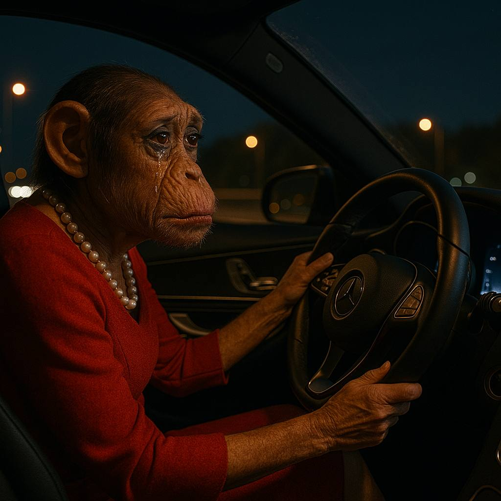

Алєговна зібралась з думками і все таки промовила :
- Драстє, я Жанна. І я шукаю Едіка…
- Кого ? - здивовано перепитав Лєонід
- Ну Едіка, Вашого брата - блізнєца.
Лєонід підійшов до вікна, взяв сигару і повільно вдихнув дим.
Алєговна закашлялась, чи то із-за єдкого дима, чи то через те, що їй перехоплювало подих від нєзємной красоти Лєоніда …
- Я не знаю де він і знати не хочу. Він мені должен багато дєнєг. Він шо і у Вас щось позичи?
- Ні, ні, ми просто з ним мали отношенія і він пропав, я не можу ніде його знайти. Телефон виключений… я не знаю шо мені робити…
- Я Вам, Жанночка Алєговна, в цьом вопросі не поможу. Він украв мого крузака і просив допомогти оформити інвалідність, щоб виїхати заграніцу. З тих пір я його не бачив.
Жанні було стидно за Едіка…
- Мій Вам совєт, - продовжив Льоня, - забудьте його як страшний сон і не вспоминайте. Бо будете мать із ним тільки проблєми. Будете коХве ? Ізвінітє, що одразу не предложив, розтєрявся.
- Так, якщо можна - маккохве, будь ласка.
-За декілька хвилин Жанна з кружкою ароматного 3 в 1 зі слізьми на очах розказувала про цвєти, любов і прізнанія в брехні, про все те, що пережила з Едіком за ті незабиваємі 3 неділі …
- Жанночка, я не маю ніякої інформациі по поводу брата. Але догадуюсь, що він як всігда переховується в мами… Це ж мамин любімчік.
- Тобто переховується ? Від кого ? Від мене ?
- Ну да. Це так часто в нього : познайомиться із якоюсь красоткою, потратить на неї вкрадені гроші і пропадає. Ви не перша.
Жанночка заплакала вголос.
Взявши адрєс мами Едіка, Жанна вже сиділа в машині і під під пісню «Ні обіцянок ні пробачень» їхала вечірньою трасою Житомир - Київ з відчуттям повної спустошеності.